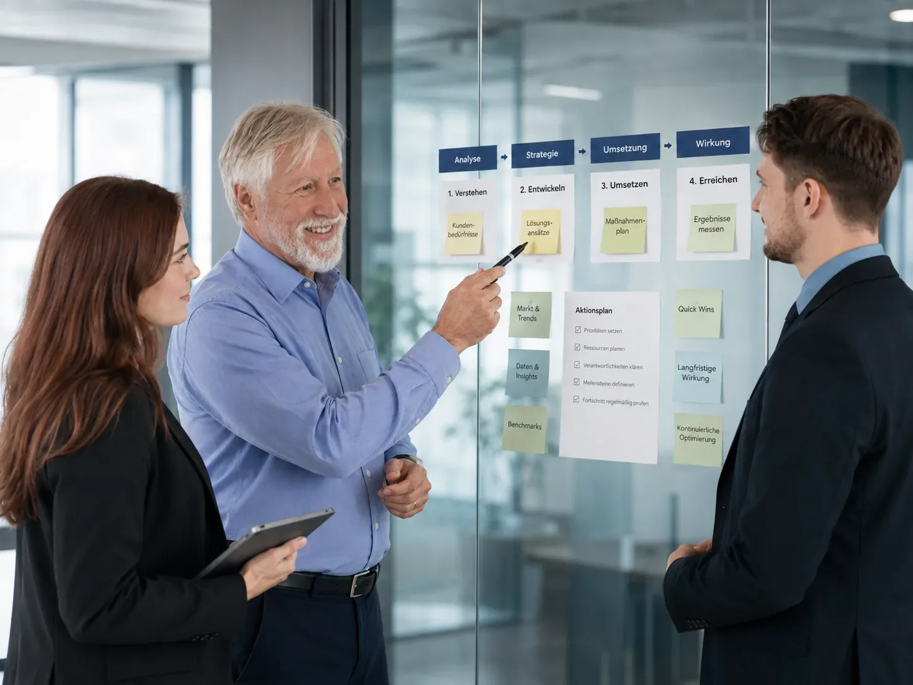

ABOUT BERATERIUM
Why Beraterium exists
Understanding risk should not be a privilege of large corporations. We bring professional risk management to where it has been missing: mid-market businesses, startups, and solo self-employed professionals.
A method that fits how businesses actually work
Many business owners know risks exist. But few know which risks matter most for their business.
Classic risk management methods are often built for corporations: complex, theoretical, and time-consuming. For mid-market businesses, startups, or smaller companies, they rarely match reality.
Beraterium was born from exactly this gap. We developed a method that helps businesses, together with their people, build a clear picture of their most important risks in a short time – understandable, practical, and without bureaucracy.
WHAT WE STAND FOR
Enterprise-grade substance, without the corporate coldness
-
Corporate experience for everyone
What was once only available to large corporations, we make understandable, affordable, and ready to use for startups, SMEs, and smaller businesses.
-
People before systems
The focus is on your people, not the tool. We run analyses with the people involved – not over their heads. That produces realistic results and genuine buy-in.
-
Impact before perfection
A good estimate beats a perfect calculation that never gets done. We look for not the most measures – but the right ones.
THE FOUNDERS
Two perspectives, one mission
Till and Peter met through social media — different paths, one shared belief: risks are not a threat but a chance to grow. That conversation became Beraterium.
-
Peter Münstermann
Over 20 years in a DAX-listed corporation — information protection, IT security and risk management up to board level. His insight: it is not technology but people who decide on security.
-
Till Manfred Blania
Startups, research, people development — serial founder and economist. With his own analysis method, he spots early where teams get stuck and culture carries.
Peter calm, structured, experienced. Till bold, change-oriented, always looking for the opportunity in risk. Together: corporate experience with start-up spirit — on equal footing.
MORE THAN CONSULTING
From insight to action
Risk Radar grew out of our work: a community where business owners and experts talk openly about risk, share experience, and learn from each other. Risks are easier to understand when you are not thinking about them alone. And when insight becomes concrete action, teams build workspaces where they develop and implement solutions together.
Discover Risk Radar →
“Beraterium is a thinking space for business owners, where risks become visible and better decisions follow.”
The people behind Beraterium
-

Till Manfred Blania
Combines business, human resources and risk management with experience from his own start-ups.
-

Peter Münstermann
20 years of corporate experience — makes risk management tangible and practically implementable.
-

Aleksandra Polosukhina
Marketing and PR expert — strengthens teams through communication and employer branding.
-

Torsten Walter Helbig
Financial adviser in Chemnitz — develops robust cashflow architectures for sustainable security.
-

Joachim Lau
Textile expert with over 20 years of industry experience — mobilises teams for genuine optimisation.
Let's get to know each other.
In a free intro call, we will show you how to make your biggest risks visible – 30 minutes, no obligation.
Book a free intro call